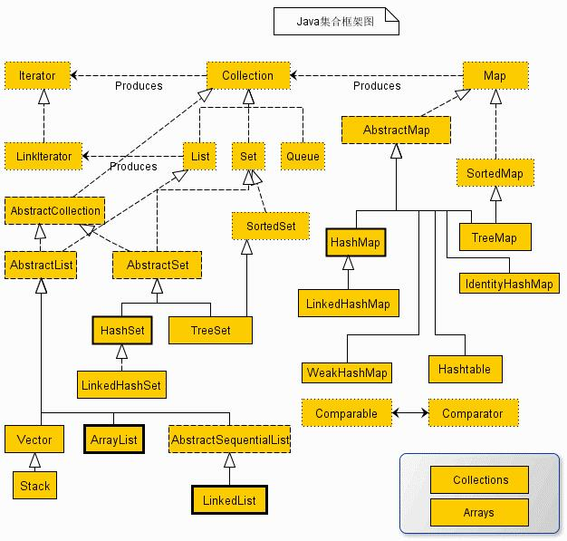

第二十八节 Collection 接口和 List 接口
一、集合的作用
用于存储多个特定数据类型对象的容器。集合有以下特点：
a. 用于存储对象，不可以存储基本数据类型
b. 长度可变
由于数据结构不同，具体容器也不同，不断向上抽取，形成了集合框架，顶层就是 Collection 接口。

二、Collection 接口
java.util;
public interface Collection<E> extends Iterable<E> {}
集合框架中的根接口。
集合中包含一些对象，这些对象称为集合的元素。
一些集合实现允许有重复的元素，而另一些则不允许。
一些集合实现是有序的，而另一些则是无序的。
JDK 不提供此接口的任何直接实现：而是提供更具体的子接口（如 Set 和 List）实现。
所有通用的 Collection 实现类应该提供两个“标准”构造方法：一个是无参数构造方法，用于创建空集合；另一个是带有 Collection 类型单参数的构造方法，用于创建一个具有与其参数相同元素新的集合。
一些集合实现对它们可能包含的元素有所限制。
Collection 接口中的很多方法是根据 equals 方法定义的。例如，contains(Object o) 方法的规范声明：“当且仅当此集合包含至少一个满足 (o==null ? e==null :o.equals(e)) 的元素 e 时，返回 true。”
三、Collection 方法
boolean add( E e ) 将e添加到集合，如果添加成功则返回true。（如果此collection不允许有重复元素，并且已经包含了指定的元素，则返回false。） 集合实现类可以限制哪些元素能添加到集合中，比如一些集合实现类拒绝添加null元素。 如果集合实现类由于某些原因拒绝添加此元素，那么必须抛出一个异常（而不是返回false）。 boolean addAll( Collection<? extends E> c ) 将指定集合中的所有元素都添加到此集合中。 void clear() 移除此集合中的所有元素。 boolean contains( Object o ) 如果此集合包含指定的元素，则返回true。 boolean containsAll( Collection<?> c ) 如果此集合包含指定集合中的所有元素，则返回true。 boolean isEmpty() 如果此集合不包含元素，则返回true。 Iterator<E> iterator() 返回此集合的迭代器。 boolean remove( Object o ) 从此集合中移除指定元素，如果存在的话。 boolean removeAll( Collection<?> c ) 移除此集合中那些也包含在指定集合中的所有元素。 boolean retainAll( Collection<?> c ) 仅保留此集合中那些也包含在指定集合的元素。 int size() 返回此集合的元素数。
四、List 接口
java.util;
public interface List<E> extends Collection<E> {}
有序，用户可以根据元素的整数索引访问元素。
允许重复。
List 接口提供了特殊的迭代器，称为 ListIterator，该迭代器还允许元素插入和替换，以及双向访问。
List 接口特有的方法
void add( int index, E element ) 在集合的指定位置插入指定元素。 boolean addAll( int index, Collection<? extends E> c ) 将指定集合中的所有元素都插入到列表中的指定位置。 E get( int index ) 返回指定位置的元素。 int indexOf( Object o ) 返回第一次出现指定元素的索引；如果不包含该元素，则返回-1。 int lastIndexOf( Object o ) 返回最后出现指定元素的索引；如果不包含此元素，则返回-1。 ListIterator<E> listIterator() 返回迭代器。 ListIterator<E> listIterator( int index ) 返回迭代器，从指定位置开始。 E remove( int index ) 移除指定位置的元素。 E set( int index, E element ) 用指定元素替换指定位置的元素。 List<E> subList( int fromIndex, int toIndex ) 返回指定的 fromIndex（包括）和 toIndex（不包括）之间的部分。
演示代码在项目 javanote 的 org.net5ijy.javanote.api.collection 包中的 ArrayListAPI.java 文件。
第二十七节 基本数据类型包装类
第二十九节 ArrayList 类、队列和栈
加入 QQ 群：5ijy网站开发交流
 ，获取更多源代码和开发环境配置信息。
，获取更多源代码和开发环境配置信息。